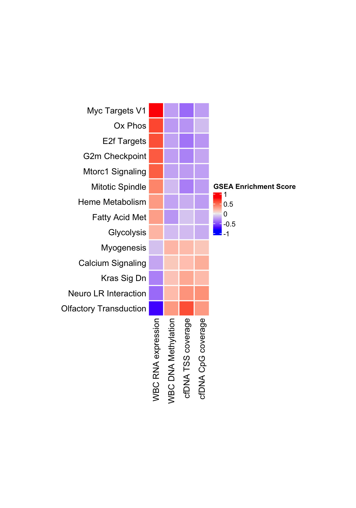

Last updated: 2024-03-10
Checks: 7 0
Knit directory: noe2024/
This reproducible R Markdown analysis was created with workflowr (version 1.7.1). The Checks tab describes the reproducibility checks that were applied when the results were created. The Past versions tab lists the development history.
Great! Since the R Markdown file has been committed to the Git repository, you know the exact version of the code that produced these results.
Great job! The global environment was empty. Objects defined in the global environment can affect the analysis in your R Markdown file in unknown ways. For reproduciblity it’s best to always run the code in an empty environment.
The command set.seed(20240129) was run prior to running
the code in the R Markdown file. Setting a seed ensures that any results
that rely on randomness, e.g. subsampling or permutations, are
reproducible.
Great job! Recording the operating system, R version, and package versions is critical for reproducibility.
Nice! There were no cached chunks for this analysis, so you can be confident that you successfully produced the results during this run.
Great job! Using relative paths to the files within your workflowr project makes it easier to run your code on other machines.
Great! You are using Git for version control. Tracking code development and connecting the code version to the results is critical for reproducibility.
The results in this page were generated with repository version 9ff0bc6. See the Past versions tab to see a history of the changes made to the R Markdown and HTML files.
Note that you need to be careful to ensure that all relevant files for
the analysis have been committed to Git prior to generating the results
(you can use wflow_publish or
wflow_git_commit). workflowr only checks the R Markdown
file, but you know if there are other scripts or data files that it
depends on. Below is the status of the Git repository when the results
were generated:
Ignored files:
Ignored: .DS_Store
Ignored: code/.DS_Store
Ignored: data/results/
Untracked files:
Untracked: analysis/temp3.Rmd
Untracked: analysis/tempS10.Rmd
Untracked: code/Pre_Supplementary_Figure10.Rmd
Untracked: code/Pre_Supplementary_FigureX2.Rmd
Untracked: code/Pre_Supplementary_FigureX3.Rmd
Untracked: code/Supplementary_Table1.Rmd
Untracked: code/Supplementary_Table2.Rmd
Untracked: code/Supplementary_Table4.Rmd
Untracked: code/Supplementary_Table5.Rmd
Untracked: code/Supplementary_Table6.Rmd
Untracked: code/Supplementary_Table7.Rmd
Untracked: code/Supplementary_Table9.Rmd
Untracked: code/cpg_500000_topbot1000_beta.R
Untracked: code/healthy_cpggroups.R
Untracked: code/healthy_cpggroups.sh
Untracked: code/tss_500000_topbot1000_beta.R
Untracked: data/Figure_2B_stats.rds
Untracked: data/Figure_2C_stats.rds
Untracked: data/carvalho_motifs_ML.rds
Untracked: data/cpg_500000_topbot1000_beta2.rds
Untracked: data/mouse_permutations_mean.rds
Untracked: data/mouse_permutations_median.rds
Untracked: data/tss_500000_topbot1000_beta.rds
Unstaged changes:
Modified: analysis/Figure2.Rmd
Modified: analysis/Figure3.Rmd
Modified: analysis/Supplementary_Figure10.Rmd
Modified: analysis/Supplementary_Figure4.Rmd
Modified: analysis/Supplementary_Figure5.Rmd
Deleted: analysis/Supplementary_Table7.Rmd
Deleted: analysis/Supplementary_Table9.Rmd
Modified: analysis/index.Rmd
Deleted: code/SuppTable1.Rmd
Deleted: code/SuppTable2.Rmd
Deleted: code/SuppTable4.Rmd
Deleted: code/SuppTable5.Rmd
Deleted: code/SuppTable6.Rmd
Modified: data/mouse_frag.rds
Note that any generated files, e.g. HTML, png, CSS, etc., are not included in this status report because it is ok for generated content to have uncommitted changes.
These are the previous versions of the repository in which changes were
made to the R Markdown (analysis/Figure3EF.Rmd) and HTML
(docs/Figure3EF.html) files. If you’ve configured a remote
Git repository (see ?wflow_git_remote), click on the
hyperlinks in the table below to view the files as they were in that
past version.
| File | Version | Author | Date | Message |
|---|---|---|---|---|
| Rmd | 9ff0bc6 | Chris Cherry | 2024-03-10 | Chris plots and tables |
| Rmd | e2712c2 | Shashikant Koul | 2024-03-06 | Reorder figures: add S4,S6,S13 |
| html | e2712c2 | Shashikant Koul | 2024-03-06 | Reorder figures: add S4,S6,S13 |
library(tidyverse)── Attaching core tidyverse packages ──────────────────────── tidyverse 2.0.0 ──
✔ dplyr 1.1.4 ✔ readr 2.1.5
✔ forcats 1.0.0 ✔ stringr 1.5.1
✔ ggplot2 3.4.4 ✔ tibble 3.2.1
✔ lubridate 1.9.3 ✔ tidyr 1.3.1
✔ purrr 1.0.2
── Conflicts ────────────────────────────────────────── tidyverse_conflicts() ──
✖ dplyr::filter() masks stats::filter()
✖ dplyr::lag() masks stats::lag()
ℹ Use the conflicted package (<http://conflicted.r-lib.org/>) to force all conflicts to become errorslibrary(fgsea)
library(ggplot2)
library(ggpubr)
library(data.table)
Attaching package: 'data.table'
The following objects are masked from 'package:lubridate':
hour, isoweek, mday, minute, month, quarter, second, wday, week,
yday, year
The following objects are masked from 'package:dplyr':
between, first, last
The following object is masked from 'package:purrr':
transposelibrary(ComplexHeatmap)Loading required package: grid
========================================
ComplexHeatmap version 2.14.0
Bioconductor page: http://bioconductor.org/packages/ComplexHeatmap/
Github page: https://github.com/jokergoo/ComplexHeatmap
Documentation: http://jokergoo.github.io/ComplexHeatmap-reference
If you use it in published research, please cite either one:
- Gu, Z. Complex Heatmap Visualization. iMeta 2022.
- Gu, Z. Complex heatmaps reveal patterns and correlations in multidimensional
genomic data. Bioinformatics 2016.
The new InteractiveComplexHeatmap package can directly export static
complex heatmaps into an interactive Shiny app with zero effort. Have a try!
This message can be suppressed by:
suppressPackageStartupMessages(library(ComplexHeatmap))
========================================library(sjPlot)Install package "strengejacke" from GitHub (`devtools::install_github("strengejacke/strengejacke")`) to load all sj-packages at once!library(here)here() starts at /Users/skoul/Documents/Projects/cfepi_wflow/noe2024tab <- fread(here('data/giraffe/gsea_table.csv')) %>%
filter(RNA.Expression.P.val < .1 & Methylation.P.val < .1 &
TSS.Coverage.P.val < .1 & CpG.Coverage.P.val < .1) %>%
select(Gene.Set, 'WBC RNA expression'='RNA.Expression.Enrichment.Score',
'WBC DNA Methylation'='Methylation.Enrichment.Score',
'cfDNA TSS coverage'='TSS.Coverage.Enrichment.Score',
'cfDNA CpG coverage'='CpG.Coverage.Enrichment.Score') %>%
data.frame() %>%
mutate(Gene.Set=str_to_title(gsub('_', ' ', Gene.Set))) %>%
mutate(Gene.Set=gsub('Hallmark.|Kegg.', '', Gene.Set)) %>%
column_to_rownames('Gene.Set') %>%
arrange(cfDNA.CpG.coverage) %>%
data.matrix()
colnames(tab) <- gsub('.', ' ', colnames(tab), fixed=T)
tab <- tab[!rownames(tab) %in% "Kras Signaling Up", ]
rename <- c(
'Fatty Acid Metabolism'='Fatty Acid Met',
'Oxidative Phosphorylation'='Ox Phos',
'Kras Signaling Dn'='Kras Sig Dn',
'Calcium Signaling Pathway'='Calcium Signaling',
'Neuroactive Ligand Receptor Interaction'='Neuro LR Interaction'
)
mid <- match(names(rename), rownames(tab))
rownames(tab)[mid] <- unname(rename)
tab <- tab[order(tab[, 1], decreasing=T), ]
Heatmap(tab, cluster_rows=F, cluster_columns=F,
rect_gp=gpar(col='white', lwd=2),
column_title_gp=gpar(fontsize=16, fontface='bold'),
name='GSEA Enrichment Score',
row_names_side='left',
height=nrow(tab) * unit(0.3, 'inches'), width=ncol(tab) * unit(0.3, 'inches'))
| Version | Author | Date |
|---|---|---|
| e2712c2 | Shashikant Koul | 2024-03-06 |
tab <- readRDS(here('data/giraffe/tss_cpg_connect_filled.rds')) %>%
column_to_rownames('trans') %>%
mutate(Coverage = log10(cov + 1)) %>%
mutate(RNA=scale(log10(rna + 1))) %>%
mutate(WPS=scale(wps)) %>%
mutate(Beta=beta) %>%
mutate(Size=size) %>%
filter(!is.na(WPS) & !is.na(Beta) & !is.na(RNA) & Size > 0) %>%
mutate(Methylated=Beta > 0.5) %>%
mutate(WPS=wps)Warning: Using one column matrices in `filter()` was deprecated in dplyr 1.1.0.
ℹ Please use one dimensional logical vectors instead.
This warning is displayed once every 8 hours.
Call `lifecycle::last_lifecycle_warnings()` to see where this warning was
generated.trans <- scales::trans_new('Signed.Sqrt',
function(x) sign(x) * sqrt(abs(x)),
function(x) sign(x) * (abs(x)^2),
breaks=function(x) ticks)
model <- lm(Coverage ~ poly(WPS, 3) + RNA*Methylated, tab)
ticks <- c(-16, -9, -4, -1, 0, 1, 4, 9, 16)
plot_model(model) +
scale_x_discrete(labels=c('RNA * Meth', 'Meth', 'RNA', 'WPS\u00b3', 'WPS\u00b2', 'WPS')) +
theme_classic() +
geom_hline(yintercept=0, color='grey', linewidth=0.5) +
scale_y_continuous(trans=trans, breaks=ticks) +
ylab('Coefficient')Scale for x is already present.
Adding another scale for x, which will replace the existing scale.
Scale for y is already present.
Adding another scale for y, which will replace the existing scale.
| Version | Author | Date |
|---|---|---|
| e2712c2 | Shashikant Koul | 2024-03-06 |
model <- lm(Size ~ poly(WPS, 3) + RNA*Methylated, tab)
ticks <- c(-36, -16, -4, 0, 4, 16, 36)
plot_model(model) +
scale_x_discrete(labels=c('RNA * Meth', 'Meth', 'RNA', 'WPS\u00b3', 'WPS\u00b2', 'WPS')) +
theme_classic() +
geom_hline(yintercept=0, color='grey', linewidth=0.5) +
scale_y_continuous(trans=trans, breaks=ticks) +
ylab('Coefficient')Scale for x is already present.
Adding another scale for x, which will replace the existing scale.
Scale for y is already present.
Adding another scale for y, which will replace the existing scale.
sessionInfo()R version 4.2.3 (2023-03-15)
Platform: aarch64-apple-darwin20 (64-bit)
Running under: macOS Ventura 13.5.1
Matrix products: default
BLAS: /Library/Frameworks/R.framework/Versions/4.2-arm64/Resources/lib/libRblas.0.dylib
LAPACK: /Library/Frameworks/R.framework/Versions/4.2-arm64/Resources/lib/libRlapack.dylib
locale:
[1] en_US.UTF-8/en_US.UTF-8/en_US.UTF-8/C/en_US.UTF-8/en_US.UTF-8
attached base packages:
[1] grid stats graphics grDevices utils datasets methods
[8] base
other attached packages:
[1] here_1.0.1 sjPlot_2.8.15 ComplexHeatmap_2.14.0
[4] data.table_1.15.0 ggpubr_0.6.0 fgsea_1.24.0
[7] lubridate_1.9.3 forcats_1.0.0 stringr_1.5.1
[10] dplyr_1.1.4 purrr_1.0.2 readr_2.1.5
[13] tidyr_1.3.1 tibble_3.2.1 ggplot2_3.4.4
[16] tidyverse_2.0.0 workflowr_1.7.1
loaded via a namespace (and not attached):
[1] minqa_1.2.6 TH.data_1.1-2 colorspace_2.1-0
[4] ggsignif_0.6.4 rjson_0.2.21 sjlabelled_1.2.0
[7] rprojroot_2.0.4 estimability_1.4.1 circlize_0.4.15
[10] parameters_0.21.5 GlobalOptions_0.1.2 fs_1.6.3
[13] clue_0.3-65 rstudioapi_0.15.0 farver_2.1.1
[16] fansi_1.0.6 mvtnorm_1.2-4 codetools_0.2-19
[19] splines_4.2.3 doParallel_1.0.17 cachem_1.0.8
[22] knitr_1.45 sjmisc_2.8.9 jsonlite_1.8.8
[25] nloptr_2.0.3 ggeffects_1.5.0 broom_1.0.5
[28] cluster_2.1.6 png_0.1-8 effectsize_0.8.6
[31] compiler_4.2.3 httr_1.4.7 sjstats_0.18.2
[34] emmeans_1.10.0 backports_1.4.1 Matrix_1.6-5
[37] fastmap_1.1.1 cli_3.6.2 later_1.3.2
[40] htmltools_0.5.7 tools_4.2.3 gtable_0.3.4
[43] glue_1.7.0 fastmatch_1.1-4 Rcpp_1.0.12
[46] carData_3.0-5 jquerylib_0.1.4 vctrs_0.6.5
[49] nlme_3.1-164 iterators_1.0.14 insight_0.19.8
[52] xfun_0.42 ps_1.7.6 lme4_1.1-35.1
[55] timechange_0.3.0 lifecycle_1.0.4 rstatix_0.7.2
[58] getPass_0.2-4 MASS_7.3-60.0.1 zoo_1.8-12
[61] scales_1.3.0 hms_1.1.3 promises_1.2.1
[64] parallel_4.2.3 sandwich_3.1-0 RColorBrewer_1.1-3
[67] yaml_2.3.8 sass_0.4.8 stringi_1.8.3
[70] highr_0.10 bayestestR_0.13.2 S4Vectors_0.36.2
[73] foreach_1.5.2 BiocGenerics_0.44.0 boot_1.3-28.1
[76] BiocParallel_1.32.6 shape_1.4.6 rlang_1.1.3
[79] pkgconfig_2.0.3 matrixStats_1.1.0 evaluate_0.23
[82] lattice_0.22-5 cowplot_1.1.3 processx_3.8.3
[85] tidyselect_1.2.0 magrittr_2.0.3 R6_2.5.1
[88] magick_2.8.2 IRanges_2.32.0 generics_0.1.3
[91] multcomp_1.4-25 pillar_1.9.0 whisker_0.4.1
[94] withr_3.0.0 datawizard_0.9.1 survival_3.5-7
[97] abind_1.4-5 performance_0.10.9 modelr_0.1.11
[100] crayon_1.5.2 car_3.1-2 utf8_1.2.4
[103] tzdb_0.4.0 rmarkdown_2.25 GetoptLong_1.0.5
[106] callr_3.7.3 git2r_0.33.0 digest_0.6.34
[109] xtable_1.8-4 httpuv_1.6.14 stats4_4.2.3
[112] munsell_0.5.0 bslib_0.6.1